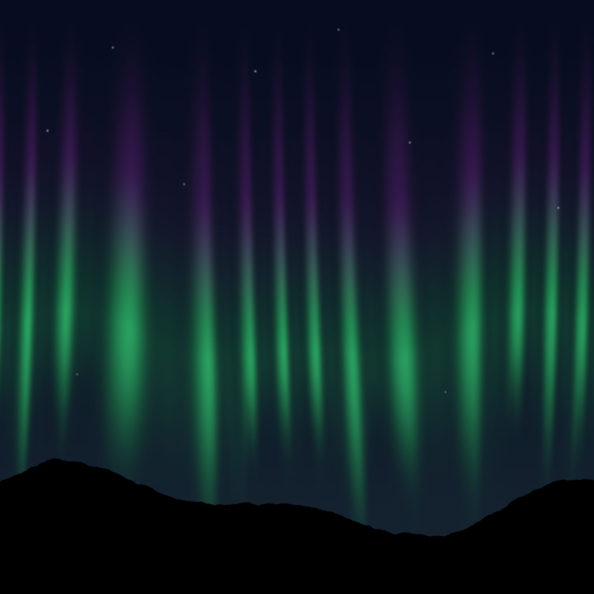
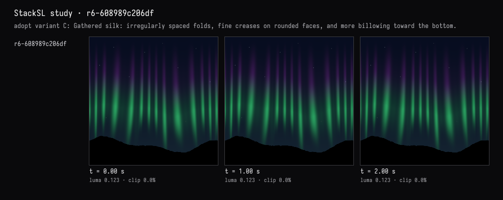
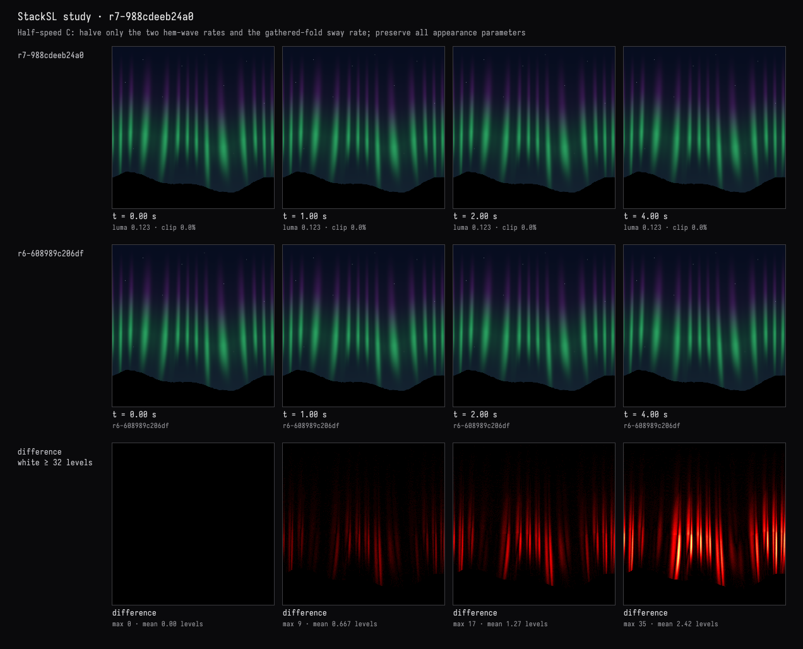
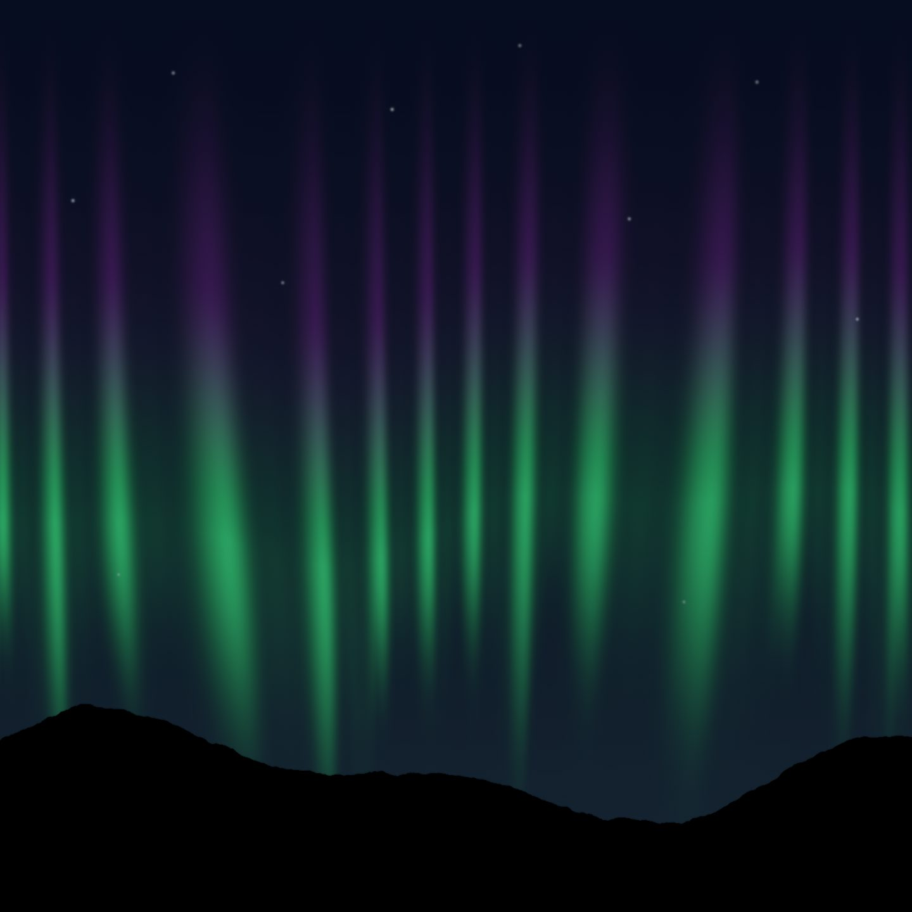

Half speed, measured
The recorded exchange: the request, the tool activity, every image the tools returned to the model, and its reply. Expand tool activity to read the steps; open an image to see it full size.
- Adopted variant C in the study card →
r6-608989c206df“adopt variant C: Gathered silk: irregularly spaced folds, fine creases on rounded faces, and more billowing toward the bottom.”
I took C in the card. Now slow the whole ripple to about half speed, keeping everything else exactly as it is, and show me it really moves about half as much.
Tool activity · 9 steps
Starting AI conversation
InspectStackSLStudy finished (1 ms)
Waiting for model
Measuring and comparing data
Measuring and comparing data
I need to observe and measure values both before and after specific intervals: [0, 0.5, 1, 2] and then doubled to [0, 2, 4]. The tool I'm using works with pixel levels in a nonlinear fashion, focusing on small intervals around 0.5. I'm aiming to match these metrics exactly, but there’s a challenge in cross-referencing times. After capturing the data, I’ll compare the old [0, 1, 2] sizes to the new [0, 1, 2, 4] metrics set at size 256. I think I’ll need about five calls in total.
Next tool:
CaptureRenderWindowRequestCaptureRenderWindowRequest finished (34 ms)
ObserveStackSLStudy finished (331 ms)
SetStackSLNumbers finished (1153 ms)
CaptureRenderWindowRequest finished (1038 ms)
Completed




Done—C now runs at exactly half speed. Only its three time rates changed; fold shapes, colours, stars, and black hills are untouched.
Measured over the same first second:
| Frame-change measure | Original C | Half-speed C |
|---|---|---|
| Mean pixel change | 0.6932 | 0.3478 |
| Pixels changing above threshold | 15.60% | 7.71% |
That’s 50.2% of the original image change. This measures image change, not physical travel distance.
The slowed frames at 2 and 4 seconds also reproduce the original’s 1- and 2-second states. At time zero, the before/after comparison reports zero difference.
Compilation passed. The live view retains C’s gathered green-violet folds, faint stars, and solid black hills.